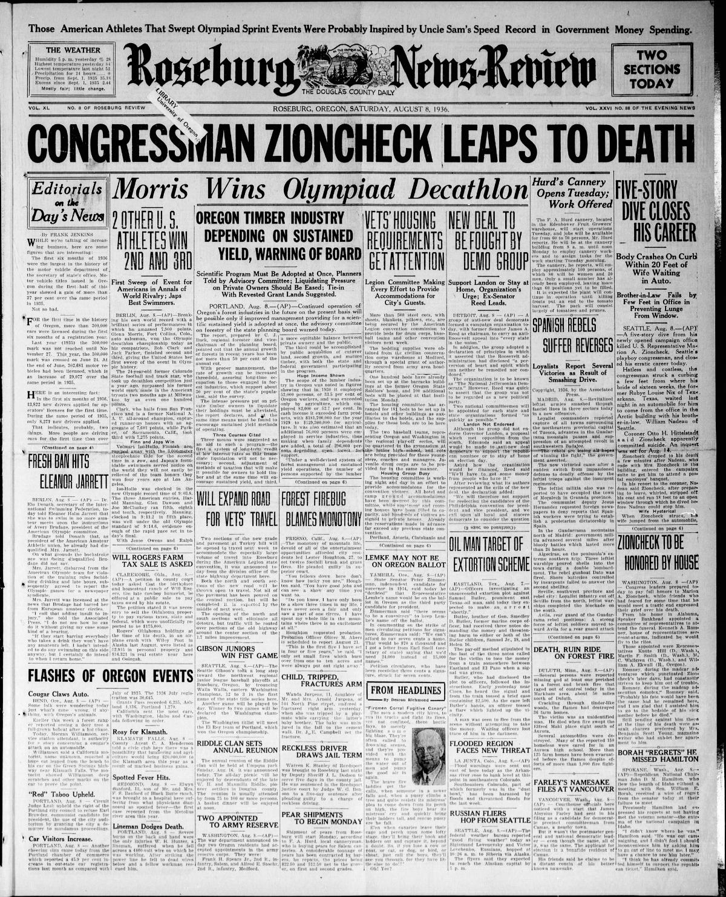

HN HN-502 · August 8, 1936 · Culture, Religion & Media > Sports, Competitions & Recreation > International tournaments
Source: Indianapolis Recorder, p. 1 — original page; Olympics, Jesse Owens.
Report: The Black-owned Recorder prominently reported Jesse Owens's victories at the Berlin Olympics, including his record-breaking long jump and the excitement in the stadium during competition with German jumper Luz Long.
Assessment: Owens won four gold medals across the 100 m, 200 m, long jump, and 4×100 m relay. That fuller record was completed later in the Games than the article's initial August 4 account; the contemporary paper and the final Olympic record reflect different reporting dates, not inconsistent results.
Authentic images retrieved from Historic Oregon Newspapers (University of Oregon). Article crops are located using the archive's own OCR word coordinates and rendered at native crop resolution; article clips are assembled from the archive's own article-block images; page scans are reduced-size access renditions. No images were generated, mocked, or retouched.

Not yet acquired. Queued for provider-specific acquisition testing (see source-acquisition manifest).
URL (preserved verbatim): https://newspapers.library.in.gov/?a=d&d=INR19360808-01.1.1
Saved research report: Historical_Newspaper_Event_Research_478-502_2026-10-23.md
Evidence note: A newspaper report means a historical publication made a claim; it does not establish that claim as fact. Contemporary reporting is separated from later scholarly context and our own assessment.